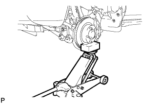
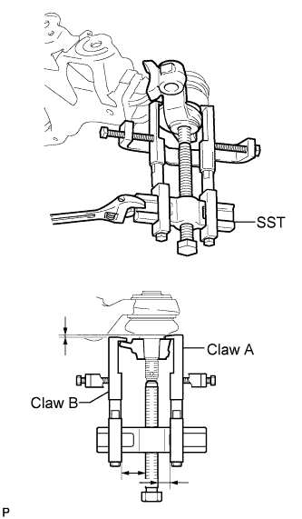

FRONT LOWER SUSPENSION ARM > REMOVAL |
| 1. REMOVE STABILIZER CONTROL VALVE PROTECTOR (w/ KDSS) |
 |
Detach the clamp, and disconnect the connector from the protector.
Remove the 3 bolts and protector.
| 2. OPEN STABILIZER CONTROL WITH ACCUMULATOR HOUSING SHUTTER VALVE (w/ KDSS) |
Using a 5 mm hexagon socket wrench, loosen the lower and upper chamber shutter valves of the stabilizer control with accumulator housing 2.0 to 3.5 turns.

| 3. REMOVE FRONT WHEEL |
| 4. REMOVE FRONT FENDER SPLASH SHIELD SUB-ASSEMBLY LH |
 |
Remove the 3 bolts and screw.
Turn the clip indicated by the arrow in the illustration to remove the fender splash shield.
| 5. REMOVE FRONT FENDER SPLASH SHIELD SUB-ASSEMBLY RH |
| 6. REMOVE NO. 1 ENGINE UNDER COVER SUB-ASSEMBLY |
 |
Remove the 10 bolts and No. 1 engine under cover.
| 7. LOOSEN FRONT NO. 1 STABILIZER BRACKET LH |
 |
Loosen the 2 bolts of the front stabilizer brackets.
| 8. LOOSEN FRONT NO. 1 STABILIZER BRACKET RH |
 |
Loosen the 2 bolts of the front stabilizer brackets.
| 9. REMOVE FRONT STABILIZER LINK ASSEMBLY LH (w/ KDSS) |
 |
Remove the 2 bolts, nut and stabilizer link.
| 10. REMOVE FRONT STABILIZER LINK ASSEMBLY LH (w/o KDSS) |
 |
Remove the bolt, nut and stabilizer link.
| 11. REMOVE FRONT STABILIZER LINK ASSEMBLY RH |
 |
Remove the bolt, nut and stabilizer link.
| 12. DISCONNECT FRONT SHOCK ABSORBER WITH COIL SPRING LH |
 |
Remove the nut and bolt, and disconnect the shock absorber from the lower side.
| 13. DISCONNECT FRONT LOWER BALL JOINT ATTACHMENT LH |
 |
Remove the 2 bolts and disconnect the attachment from the steering knuckle.
| 14. REMOVE FRONT NO. 1 SUSPENSION ARM LOWER SUB-ASSEMBLY LH |
 |
Support the front suspension LH with a jack.
 |
Place matchmarks on the No. 2 camber adjusting cam and No. 2 suspension toe adjusting plate.
Remove the nut, washer, No. 2 camber adjusting cam, camber adjusting cam assembly, bolt, toe adjusting cam, No. 2 suspension toe adjusting plate and front No. 1 suspension arm lower LH.
| 15. REMOVE FRONT LOWER BALL JOINT ATTACHMENT LH |
Remove the cotter pin and nut.
 |
Using SST, remove the lower ball joint attachment.